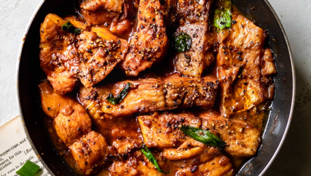
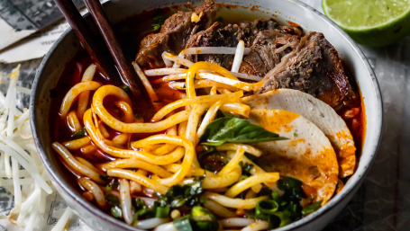

You will need:
- 1.5 lbpork
- 1yellow onion
- 1.5 ozfresh tamarind
- 1 tspsalt
- 20 ozpineapple
- 5 ozginger
- 1.5 lbcatfish
- 10 ozelephant ear stem
- 3 tomatoes
- 12 ozbean sprouts
- 1 tspgranulated sugar
- 1 ozrice paddy herb
Now let's begin!
- Add pork to a large soup pot. Cover with water until it just covers the pork. Bring to a boil and simmer for 10 minutes. Take out the pork and then throw away the water. This process cleans the pork. Rinse the pot and add the pork back. Cover the pork with fresh water until it just covers the meat. Bring to a boil.
- Add the onion and simmer for 1.5 hours. Make sure to check every 30 minutes for impurities. Scoop away any you see.
- While the soup is simmering, combine 1 cup of water and tamarind in a small saucepan. Bring to a boil and let it simmer until the tamarind dissolves.You can help speed up the process by using the back of a spoon to crush the tamarind. Pour the tamarind through a fine mesh sieve into a small bowl. Set aside.
- After simmering the soup for 1.5 hours, add the pineapple and ginger to the soup. Simmer for another 20 minutes.
- Put the catfish in and simmer for another 10 minutes until it is cooked through.
- Lastly, add the vegetables and tamarind from step 3. Bring the soup to a boil and serve with a side of white rice. Make sure to taste the soup for seasoning and add more salt if it tastes bland.
Recommended Dishes

Cá Kho
Braised Carmelized Fish

Bún Bò Huế
Spicy Beef Noodle Soup